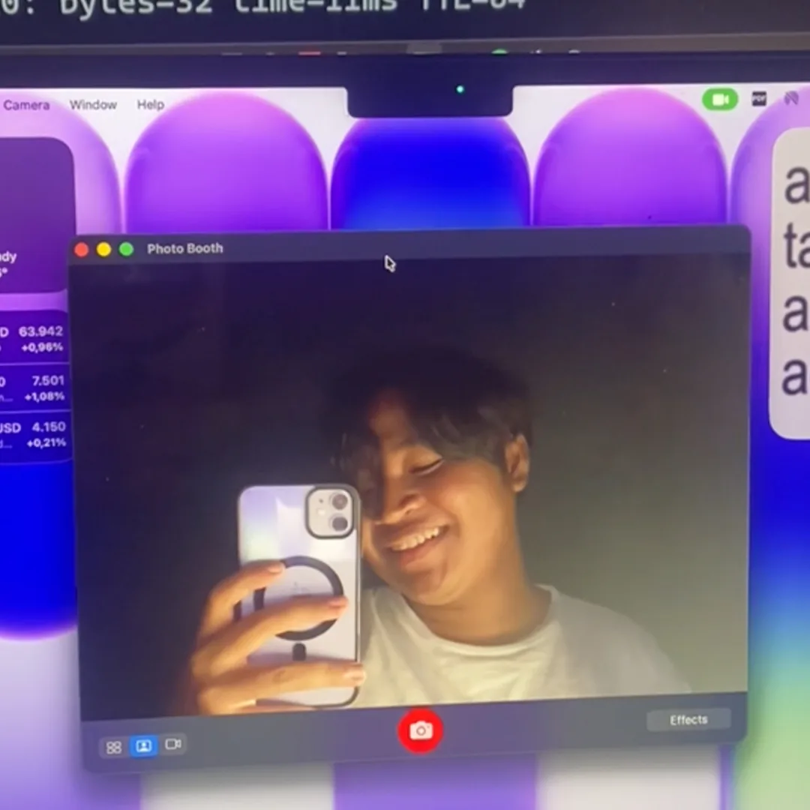
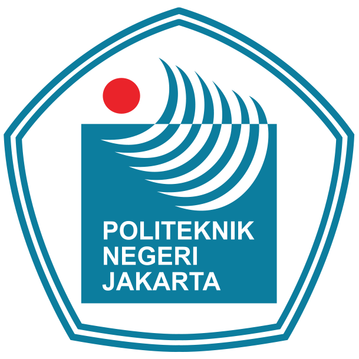
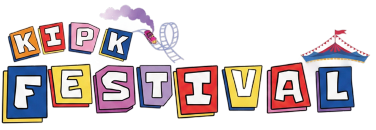
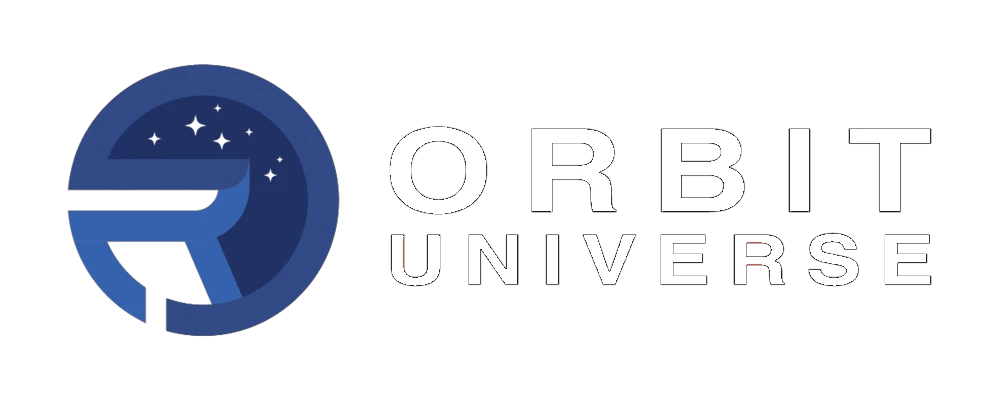

Fazar
Mahasiswa Teknik Komputer
Jakarta, Indonesia
Tentang Saya
Halo! Saya Fazar, mahasiswa D4 Teknik Multimedia Digital Jurusan Teknik Informatika dan Komputer di Politeknik Negeri Jakarta. Sejak 2021, saya bekerja sebagai Motion Graphics Designer secara remote. Pernah berkolaborasi dengan Sony Music untuk post-produksi music video (MV) dan sebagai 3D Artist di Orbit Universe Studio. Meraih Juara 3 lomba desain poster tingkat Provinsi Jakarta. Saya juga gemar bermain gitar listrik dan mendengarkan musik untuk mencari inspirasi dan ide kreatif.
Personality
The Architect
Strategic thinker dengan visi jangka panjang. Analytical, independent, dan selalu driven untuk continuous improvement. Passionate dalam problem-solving dan mengeksplorasi ide-ide kompleks.
Tech Stack
Frontend
Backend
Design & Creative
Tools & Others
Pengalaman

Ketua Divisi Animator 2D
Pengabdian Kepada Masyarakat Skema Lektor
On Going
Bertanggung jawab dalam penggarapan animasi 2D karakter untuk proyek Pengabdian Kepada Masyarakat (Skema Lektor). Berfokus pada animasi pergerakan visual dan motion karakter 2D berbasis aset yang telah disediakan oleh tim.

Staff Divisi HPDD
KIP Kuliah Festival 2026 PNJ
2026
Bertanggung jawab sebagai Staff Divisi HPDD dalam kepanitiaan KIP Kuliah Festival 2026 PNJ, sekaligus merancang dan membangun platform website resmi KIPK Festival.
Online Editor
Studio Titik Sembilan & Sony Music
2025
Berkesempatan bergabung dengan team Studio Titik Sembilan sebagai online editor untuk produksi music video. Mengerjakan post-production dan editing untuk project music video "Untuk Kau Yang di Sana" by For Revenge dan Stand Here Alone. Pengalaman bekerja dengan tim profesional dalam industri musik Indonesia.
Staff Software Development
Computer Student Club PNJ
2025
Mempelajari dan membuat projek website development fullstack menggunakan Framework Java Script.

3D Artist
Orbit Universe Studio
2024
Berkesempatan bergabung dengan team Orbit Universe Studio sebagai 3D Artist untuk mengerjakan project internal BUMN. Bertanggung jawab dalam pembuatan aset 3D, modeling, dan visualisasi untuk kebutuhan promosi dan presentasi corporate. Pengalaman bekerja dengan software 3D profesional dan pipeline production studio.

Public Relations Intern
PT Wijaya Karya Industri & Konstruksi
2023 Praktik Kerja Industri (SMK)
Melakukan magang di bagian Public Relations, membantu dokumentasi kegiatan perusahaan, pembuatan konten media sosial, dan editing video untuk keperluan promosi corporate. Pengalaman kerja di lingkungan profesional BUMN.
Lihat Sertifikat
Juara 3 Lomba Desain Poster
Balaikota Jakarta - Kompetisi Tingkat Provinsi
2022
Meraih prestasi Juara 3 dalam kompetisi desain poster tingkat se-Provinsi Jakarta yang diselenggarakan di Balaikota Jakarta. Kompetisi ini mempertandingkan kemampuan desain poster dari berbagai peserta se-Jakarta. Achievement yang membuktikan kemampuan dalam bidang desain grafis dan kreativitas visual.
Motion Graphics Designer
Freelance / Remote Work
2021 - Sekarang
Bekerja sebagai motion graphics designer remote untuk berbagai klien. Spesialisasi dalam motion design, video editing menggunakan After Effects dan Premiere Pro, serta pembuatan konten visual untuk media sosial dan promosi digital.
Pendidikan
D4 Teknik Multimedia Digital
Politeknik Negeri Jakarta
2024 - Sekarang (Semester 5)
Sedang menempuh pendidikan D4 Teknik Multimedia Digital dengan fokus pada Software Engineering, Web Development, dan Game Development.
SMK - Jurusan Multimedia
SMK Prestasi Prima
2022 - 2024
Lulusan SMK jurusan Multimedia dengan fokus pada desain grafis, video editing, dan dasar-dasar pemrograman web. Pengalaman hands-on dengan Adobe Creative Suite dan web development.
Sertifikasi & Online Courses
Various Online Platforms
2021 - 2025
Pengenalan ke Logika Pemrograman (Programming Logic 101)
Dicoding Indonesia
Belajar Dasar Visualisasi Data
Dicoding Indonesia
Pelatihan Peningkatan Kompetensi Peserta Didik SMK Bidang Keahlian Multimedia
Pusat Pengembangan Kompetensi Pendidik, Tenaga Kependidikan Dan Kejuruan Jakarta Timur Provinsi DKI Jakarta
Junior Operator Desain Grafis
Lembaga Sertifikasi Profesi
Fasilitasi Pandu Literasi Digital Pendidikan Literasi Digital
Pusat Pengembangan Literasi Digital
Minat & Hobi
Belajar hal baru
Eksplorasi teknologi baru dan open source projects
Videography
Cinematography dan video production
Mendengarkan Musik
Mendengarkan lagu favorit
Bermain Gitar Listrik
Memainkan riffs favorit